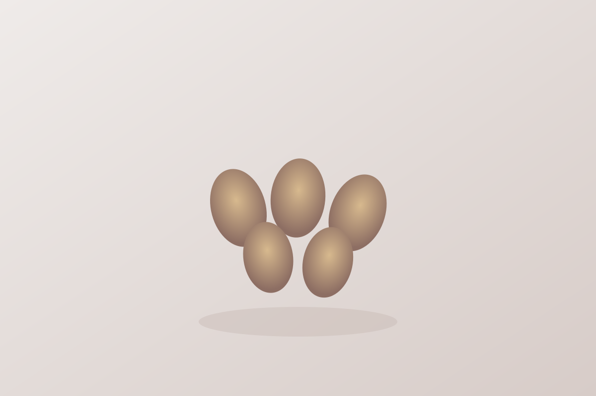

Almond
Quick answer
Almonds fit practical anti-inflammatory routines because they are easy to use in snacks, breakfasts, and meal add-ons without much preparation.
What it is
Almonds are edible tree nuts commonly eaten whole, sliced, or used in simple topping and snack patterns.
Why almond may support an anti-inflammatory diet
Almonds are useful because they help make snacks and breakfasts more structured and repeatable while staying close to whole foods.
Key nutrients and compounds
- Vitamin E
- Magnesium
- Fiber
- Healthy fats
Potential health benefits
- Helps build practical snacks
- Works in breakfast bowls and yogurt
- Adds texture and healthy fats to simple meals
How to eat almonds
- Use almonds in simple snack mixes
- Add them to oats or yogurt
- Top salads and bowls with sliced almonds
Shopping and storage
Store almonds sealed in a cool, dry place.
FAQ
Are almonds anti-inflammatory?
They are commonly included in anti-inflammatory food patterns because they are practical whole-food nuts that fit easy daily use.
Evidence note
Almonds are described here as a supportive food within a broader eating pattern, not as a treatment by themselves.
The strongest factual framing on this page is limited to established nutrition context such as vitamin E, magnesium, fiber, and healthy fats. The page does not claim that eating almonds guarantees a specific health outcome.